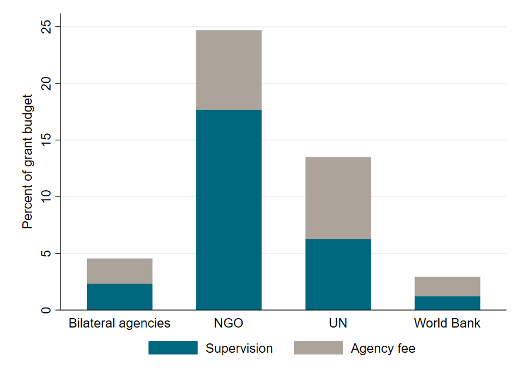
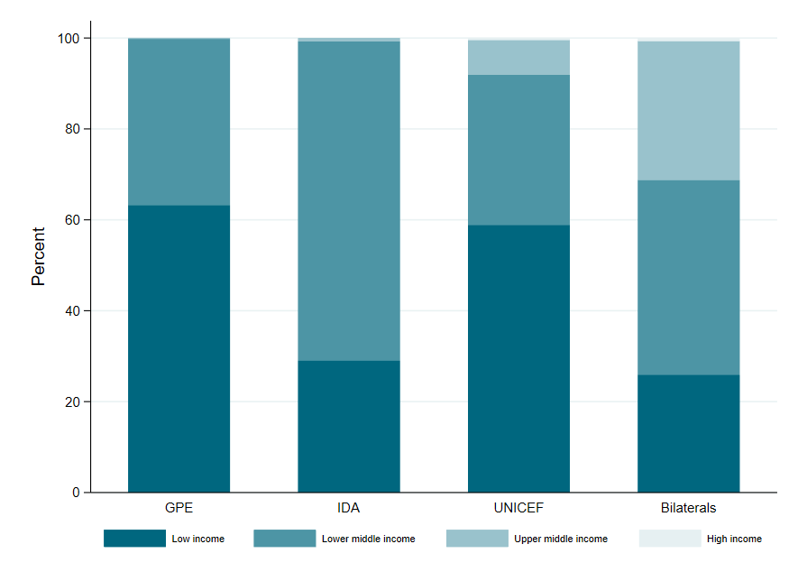
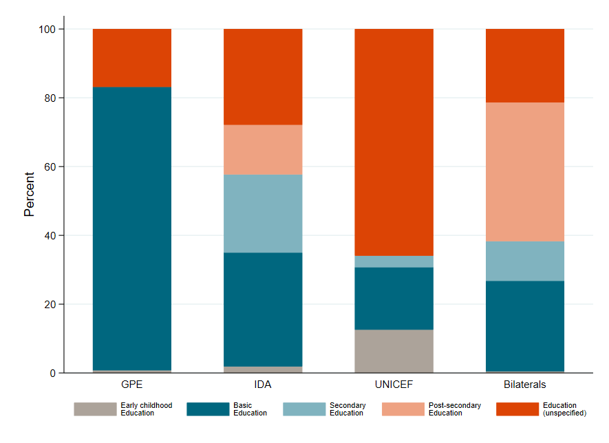
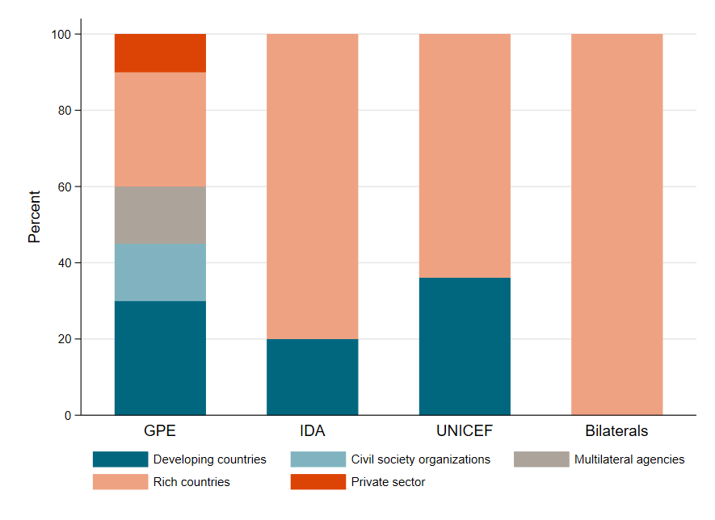

Researcher
This site is a work in progress. The following is a preview.
In the crowded field of multilateral aid organizations, the Global Partnership for Education (GPE) is among the lesser known. With annual disbursements of about $300 million a year, it’s only about a fifth the size of UNICEF, and roughly a tenth the size of its cousin in the health sector, the Global Fund to combat AIDS, tuberculosis, and malaria.
Last week the Global Partnership for Education (GPE) launched its new replenishment campaign asking for at least $5 billion for the period 2021-2025. This is double the amount pledged during GPE’s previous replenishment round. GPE argues that these funds would help boost discretionary finance available to education ministries in low-income countries by almost a third at a time when policymakers are facing tough trade-offs and potential reductions to education spending. Even before the pandemic, the international education community faced a looming funding gap to meet basic SDG goals and a potentially broken education aid architecture. As Boris Johnson and Uhuru Kenyatta call on donors to provide more funds for education, what do we know about the funds that do exist, particularly, who gets the money, what it’s spent on, and how funding decisions are made?
Figure 1. Tracking the multiple, parallel flows of foreign aid for education
Source: Authors’ analysis of OECD’s Creditor Reporting System and GPE’s financial documents, for the years 2016-18. "Bilateral agencies" include AFD, DFID, IDRC, and SIDA. "UN agencies" are UNESCO and UNICEF. "Non-profits" are Oxfam, Save the Children, and CARE.
International organizations, including bilateral donors, multilateral agencies, and pooled funds, that make up the education aid architecture, provide a total of $9.45 billion dollars in education funding annually. These funds often follow a convoluted path from their point to origin to the ultimate recipient, sometimes changing hands multiple times. Multiple donors often give money to the same set of recipient countries primarily through three different channels (Figure 1):
Roughly 6.7 percent of total basic education aid to low-income and lower-middle-income countries flows through GPE, which was originally founded by the World Bank in 2002 as a pooled fund and has since evolved to take on other functions (for example, knowledge creation).
Figure 2. A majority of GPE funds go to the World Bank, its main grant agent
Source: Data is from GPE’s cosolidated financial reports, for the years 2016-18.
GPE funding model relies on grant agents, usually a multilateral agency (most of the time the World Bank) to oversee disbursement of funds to recipient countries. The World Bank is GPE’s largest grant agent, with over 75 percent of GPE funds being executed by the World Bank (Figure 2). In fact, the World Bank managed US$3.3 billion in GPE grants over the past decade, one-fourth of which was co-financing for IDA operations.
Figure 3. A leaky chain

Source: Data is from GPE’s cosolidated financial reports, for the years 2016-18.
Education aid often changes hands multiple times from its point of origin to its destination, as shown in Figure 1. For each new entity along the funding chain, there are overhead costs, which help run programs but also add up, as shown in Figure 3. After funds reach GPE, which charges an average of 3 percent overhead each year, money then passes on to grant agents, who charge their own agency and supervision fees (both comprising overhead costs). For example, UN agencies are one GPE grant agent and tend to charge 7 percent of the grant amount in agency fees. The World Bank has a lower agency fee (1.75 percent) but they carry out most of GPE’s programs, so the total amount is substantial. Of course, these fees help run programs, but what we don’t know is the value for money (or expertise delivered per dollar spent) for these widely varying overhead costs. However, the real question is this: if most GPE funds end up going to the World Bank, GPE’s main grant agent, why shouldn’t these funds be directed straight from the donors to the World Bank in the first place instead of passing through GPE?
Figure 4. A majority of GPE recipients are low-income economies

Source: GPE allocation data is from their financial reports. World Bank income group classifications are from 2019
We know that a large majority of GPE funds are disbursed by the World Bank, and we also know that all the GPE recipient countries (in 2016-2018) are IDA-eligible. This isn’t surprising considering poverty is one of the key determinants of eligibility for GPE grants, along with fragility and population of out-of-school children. But does this make GPE redundant?
Given the big overlap in GPE and IDA countries, are both funds spending the education aid money on similar sub-groups of countries? Not quite. As shown in Figure 4, GPE spends a majority of its funds on low-income economies, including fragile and conflict-affected countries — a focus that has only increased over time since 2004. GPE uses a need-based allocation formula to determine allocation, with additional weighting for fragile and conflict-affected countries. IDA, in comparison, has a relatively smaller focus on low-income countries, and a much larger focus on “lower middle income” countries. Despite this differentiation in country focus, most GPE funds do end up flowing through the World Bank before going to the recipient countries.
More than the type of countries that receive GPE’s money, a bigger difference lies in sectoral prioritization. GPE spends a bulk (82 percent) of its budget on primary education. This is in contrast to IDA and UNICEF, who spend roughly one-third and one-fifth of their budget on primary education, respectively.
Figure 5. GPE is much more focused on primary education compared to IDA, UNICEF, and bilaterals

Source: CRS data on disbursements (USD) for 2016-18. “Early childhood education” is formal and non-formal preschool education. “Basic education” entails primary education, basic life skills for youth, primary education equivalent for adults, and school feeding. “Secondary education” covers both lower and upper secondary education as well as vocational training. “Post-secondary education” refers to higher education (universities, colleges, and scholarships) and advanced technical training. “Education (unspecified)” encompasses education sector policy planning, aid to education ministries, research, and teacher training where the education level is not specified.
Perhaps the biggest difference between GPE and other funding bodies lies in its governance and decision-making structure. Figure 6 compares board member voting shares across GPE, IDA, and bilaterals such as the USAID and FCDO.
Figure 6. The governance of aid look different across GPE, IDA, UNICEF, and bilaterals

Source: GPE board data as noted on their website on September 1, 2020, IDA board data as reported on August 17, 2020, and reflects voting powers of elected directors. Bilaterals refer to USAID and FCDO. UNICEF board data is for 2020. For IDA and UNICEF, “Developing countries” include low-income and lower-middle income economies only, as classified by the World Bank, while all others fall under “Rich countries.”
GPE is governed by a constituency-based board of directors, with 20 members, representing developing countries, civil society organizations (CSOs), multilateral agencies, donor countries, and private sector organizations. In IDA, on the other hand, each member’s voting share, and there are 173 members, is largely determined by their financial contribution to the World Bank. The five largest donors (US, UK, China, France, and Germany) appoint 5 members on the 25-member board, while the remaining elected members represent all the remaining countries. The US, for example, holds 10.2 percent of the IDA voting share, which gives it considerable sway over IDA decisions.
GPE has a relatively larger share of developing country representation compared to IDA, and prioritizes consensus-building in its board decisions. If all efforts to build consensus fail, GPE uses majority voting, but the majority vote must include at least one vote in favor from each key constituency, including developing countries, donor countries, multilateral agencies, and CSOs (or private sector organizations/foundations), which perhaps offers a more democratic way to make decisions. Similarly, education sector plans are monitored and implemented by a collaborative country-level forum called a Local Education Group (LEG), whose activities are usually coordinated by an international organization, often a UN agency.
However, there are limitations to multi-stakeholder governance. Entrenched views on a heterogeneous board could hamper policy dialog and decisions due to “strategic avoidance.” For example, it may have slowed down GPE’s grant disbursements and approvals. GPE’s share of total basic education aid to low-income and lower-middle-income countries fell to 6.7 percent from 11.4 percent between 2014 and 2018—a fall that may be potentially explained by the abrupt slowdown in disbursements in 2018-2019 due to a slowdown in grant approvals, and potentially due to the transition to GPE’s new financing and funding framework (UNESCO Policy Paper 41). On average, there is a 3 year lag between approval and disbursements. However, this slowdown in disbursements in prior years may have allowed GPE to respond more flexibly to the Covid crisis through it’s $500 million funding window for emergency response by possibly utilizing undisbursed funds (UNESCO Policy Paper 41). Similarly, for the longest time, GPE avoided a policy position on private schooling, a contentious issue in education circles, possibly due to it’s multi-stakeholder governance structure that might limit policy debate, until it finally issued a private sector strategy in 2019.
Different donors are giving money to the same recipients through different channels: through bilateral aid, multilateral agencies, and pooled funds like GPE, who direct funds to multilateral agencies, who then give money to recipient governments. Most GPE funds end up going to the World Bank, GPE’s main grant agent, which raises questions about the value-add of GPE as a pass-through, and why this money cannot be directed straight to the World Bank from donors in the first place. However, GPE is different from the World Bank in terms of who gets the money and what the money is spent on. GPE has a relatively larger focus on low-income countries, and a much larger focus on primary education compared to the World Bank’s IDA. But the biggest difference might lie in GPE’s governance structure, which perhaps offers more representative country ownership than IDA and other donor agencies are able to.